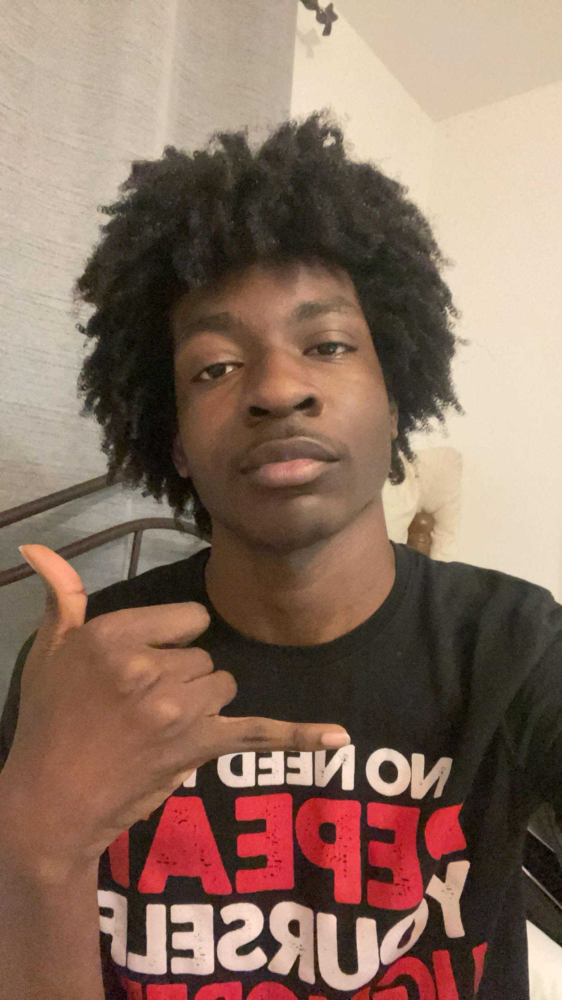

Our Story
Founded by Ven-Anyanwuocha Kamsi, SesiHairStudio offers high-quality, custom wigs designed for all hair types and styles.
Founder & Leadership
Ven-Anyanwuocha Kamsi: The creative mind behind SesiHairStudio, passionate about empowering individuals with stylish wigs.
Our Values
Creativity, inclusivity, and helping people feel their best are the core values of our brand.